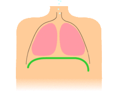
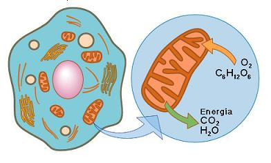
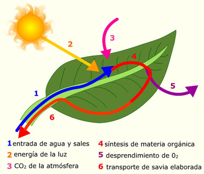

Lectura fundamental de las reacciones químicas...
Para aplicar lo propuesto anteriormente, vamos a identificar las reacciones químicas más frecuente y primordiales para los seres vivos, prestando mucha atención al siguiente texto.
Reacciones químicas, otro punto de vista
Página tomada del material Reacciones químicas, otro punto de vista.
(s.f.) Licencia CC-BY-SA. Consultada: 17 de Septiembre de 2014.
En este apartado nos centramos en algunas reacciones de los seres vivos: respiración, fermentación y fotosíntesis.
Respiración
Cuando nos referimos a la reacción química de la respiración estamos hablando de la que se produce en las células. Consiste en una oxidación de compuestos que proporciona energía que la célula aprovecha para realizar los procesos metabólicos. La reacción más habitual es la de glucosa:
| C6H12O6 + 6O2 → 6 H2O + 6 CO2 + 38 ATP |

Imagen tomada de Wikipedia Respiración bajo licencia CC-BY-SA, el día 6 de octubre de 2014.
{kind=link}
Con permiso de los biólogos, nos saltamos un montón de pasos. El ATP se orma a partir de otras moléculas (que no ponemos en la reacción, por lo que no está ajustada). Arriba hemos indicado el final del proceso con la energía "guardada" en el ATP, adenosín trifosfato, la molécula que al transformarse en ADP (adenosín difosfato) libera la energía cuando es necesaria:
| ATP → ADP + HPO43- ΔH = - 31 Kj/mol |
Resumiendo, las células obtienen energía a partir de los alimentos que transformamos en glucosa. Este compuesto químico se descompone en las mitocóndrias de las células dando la energía que necesitan.
Imagen de Educastur, tomada de una actividad creada por el Proyecto Palacorre (Blog de Proyecto Avanzado IES La Corredoria)con Licencia Creative Commons Atribución Compartir Igual 3.0
Fermentación
La fermentación es otro proceso de oxidación pero en el que no participa el oxígeno y que no llega a ser completa, no obtenemos H2O y CO2. Los microorganismos responsables de esta reacción son levaduras, bacterias y mohos.
Por ejemplo, las bebidas alcohólicas se fabrican gracias esta reacción:
| C6H12O6 → 2 C2H5OH + 2 CO2 |
De nuevo la glucosa,en general los azúcares, reaciona para dar alcohol, en este caso etanol.
Fotosíntesis
Es el proceso que realizan las plantas para crear materia orgánica a partir de sales minerales, agua y la luz del sol. La energía solar es transformada en energía química que se acumula en las moléculas de ATP que servirán para sintetizar moléculas orgánicas. Esta reacción se produce en los cloroplastos, orgánulos que solo se encuentran en células vegetales.
Nos quedaba la más importante, la obtención de glucosa por parte de las plantas. Esta reacción le permite ser autótrofos.
| Por ejemplo, se puede formar glucosa: | H2O + 6 CO2 + luz (hf)→ C6H12O6 |

Imagen del Intef, tomada de una actividad con Licencia Creative Commons Atribución Compartir Igual 3.0